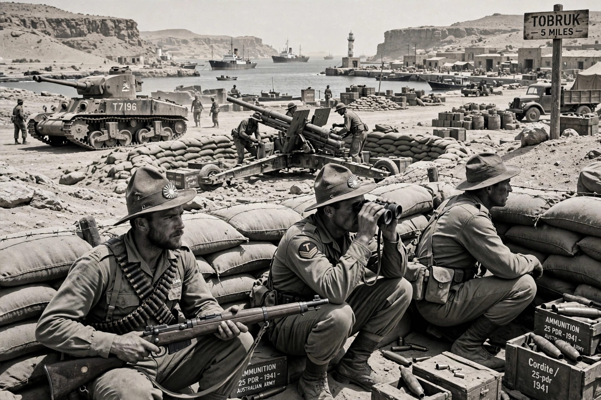

The Siege of Tobruk took place between 10 April and 27 November 1941, during the Western Desert campaign of the Second World War. An Allied force, principally the Australian 9th Division, held the Libyan port of Tobruk against German-Italian forces under Erwin Rommel's Afrika Korps for 241 days.

| Date | 10 April – 27 November 1941 |
|---|---|
| Location | Tobruk, Italian Libya |
| Result | Allied victory |
| Belligerents | Allies (Australia, UK, India, Poland, Czechoslovakia) vs Axis (Germany, Italy) |
After Operation Compass captured Tobruk from Italy in January 1941, Rommel's counter-offensive pushed the Allies back to Egypt, leaving Tobruk's garrison isolated but supplied by sea by the Royal Navy.
The defenders — mocked by German propaganda as 'rats in a trap' — proudly adopted the name the Rats of Tobruk. They endured bombing, built extensive defences in Italian-built fortifications, and patrolled aggressively. Attempts to relieve them (Operations Brevity and Battleaxe) failed; Operation Crusader in November-December 1941 finally lifted the siege.
Tobruk fell in a later Axis offensive in June 1942, before being retaken after El Alamein in November 1942. The 1941 defence became a celebrated episode in Australian military history.